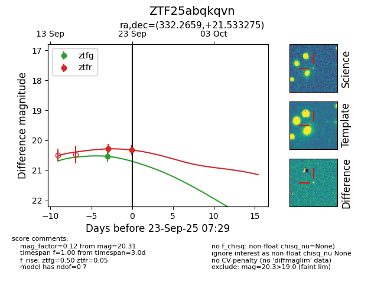
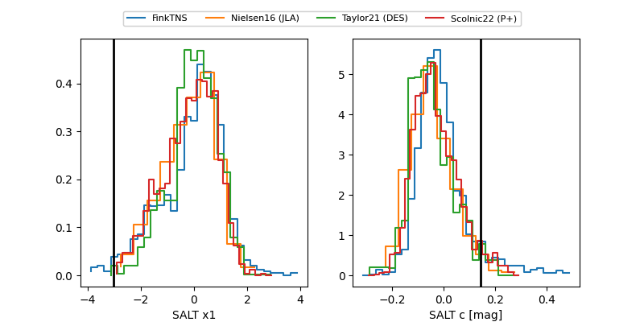

FINK: ZTF25abqkqvn
Lasair: ZTF25abqkqvn
ALeRCE: ZTF25abqkqvn
ZTF25abqkqvn (ztf,fink)
equatorial (ra, dec) = (332.2659,+21.53328)
galactic (l, b) = (79.9173,-27.46935)


last ztfg=20.53, ztfr=20.31
1 ztfg, 2 ztfr detections